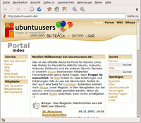
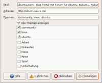
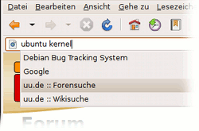
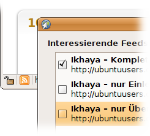

Epiphany
Dieser Artikel wurde für die folgenden Ubuntu-Versionen getestet:
Ubuntu 16.04 Xenial Xerus
Ubuntu 14.04 Trusty Tahr
Zum Verständnis dieses Artikels sind folgende Seiten hilfreich:
Web  , besser bekannt als Epiphany, ist der Webbrowser der GNOME-Desktopumgebung. Ubuntu installiert ihn jedoch nicht von Haus aus, sondern nutzt stattdessen den bekannteren Webbrowser Firefox. Epiphany setzt wie die Browser Midori, Arora, QupZilla, rekonq und Chromium auf Webkit.
, besser bekannt als Epiphany, ist der Webbrowser der GNOME-Desktopumgebung. Ubuntu installiert ihn jedoch nicht von Haus aus, sondern nutzt stattdessen den bekannteren Webbrowser Firefox. Epiphany setzt wie die Browser Midori, Arora, QupZilla, rekonq und Chromium auf Webkit.
Der Epiphany-Browser integriert sich gut in GNOME und nutzt auch Komponenten dieser Desktop-Umgebung, etwa den GNOME Schlüsselbund zum sicheren Speichern von Nutzerkennungen und zugehörigen Passwörtern. Die erweiterten Einstellungen des Browsers finden sich im Gconf-Editor.
Genauso wie alle anderen modernen Browser beherrscht Epiphany das Öffnen von Webseiten in Tabs und lässt sich durch zahlreiche Erweiterungen um weitere Funktionen bereichern.
Ab GNOME 3.6 wurde Epiphany in "Web" umbenannt. Unter Ubuntu wird derzeit der alte Name weiter benutzt.

Installation¶
Epiphany kann direkt aus den Paketquellen von Ubuntu installiert [1] werden:
epiphany-browser (universe)
 mit apturl
mit apturl
Paketliste zum Kopieren:
sudo apt-get install epiphany-browser
sudo aptitude install epiphany-browser
Anschließend kann man Epiphany in GNOME über "Anwendungen -> Internet -> Epiphany Webbrowser" bzw. in Xfce über "Applications -> Netzwerk -> Epiphany Webbrowser" starten oder direkt als epiphany-browser [4] (Es gibt epiphany als Spiel).
Lesezeichen¶

Die Lesezeichen-Verwaltung erscheint manchem sicherlich ungewohnt. Die Sortierung erfolgt nicht hierarchisch, sondern themenbezogen, über Schlagwörter (engl. "tags"). Auf diese Weise kann man ein Lesezeichen mehreren Themen zuordnen.
Die Lesezeichenverwaltung erkennt auch schon vorhandene Einträge, es können so keine Einträge doppelt vorkommen. Mögliche Eintrage werden während der Eingabe in die Adresszeile vorgeschlagen.
Fenster-Handling¶
Intern¶
Epiphany kann Webseiten in einzelnen Fenstern oder auch als Reiter in einem Fenster öffnen. Will man Links in einem neuen Reiter öffnen, so klickt man mit nur der mittleren Maustaste bzw. dem Mausrad auf einen Link.
Externe Anwendungen¶
Möchte man Links aus anderen Anwendungen heraus mit Epiphany öffnen, so kann man in diesen meist den Browser als Kommando eintragen. Über einen Parameter kann man bestimmen, wie Epiphany mit solchen externen Links umgehen soll.
| Links durch externe Anwendungen öffnen | |
| Aufruf | Beschreibung |
epiphany | Link in einem neuen Fenster öffnen |
epiphany --new-tab | Link in einem neuen Reiter öffnen |
epiphany --fullscreen | Link im Vollbildmodus öffnen |
Achtung!
--fullscreen bzw. -f wird in der aktuellen Version nicht mehr unterstützt.
Adblock¶
Dieser Werbeblocker funktioniert weitgehend gut und kann im Zusammenspiel mit der Erweiterung "Seiteninformationen" ähnlich komfortabel benutzt werden wie Adblock unter Firefox. Um z.B. ein bestimmtes Skript auf einer Website zu blockieren, reicht es, den Menüpunkt "Ansicht -> Seiteninformationen" aufzurufen und dort im Reiter "Medien" die passende URL zu blockieren.
GreaseMonkey¶
Diese Erweiterung erlaubt es, für einzelne Seiten vorgefertigte Skripte auszuführen, um deren Aussehen, Verhalten oder Inhalt zu ändern. Hat man die GreaseMonkey-Erweiterung aktiviert, kann man diese Skripte mit der Endung ".user.js" per Rechtsklick auf den Link und dem Menüpunkt "Benutzerskripte installieren" hinzufügen.
Die Änderungen werden nach einem Reload der Seite sofort sichtbar. Alternativ kann man ein heruntergeladenes Skript in den Ordner ~/.gnome2/epiphany/extensions/data/greasemonkey im Homeverzeichnis kopieren.
Eine sehr umfangreiche Sammlung an Greasemonky Skripten findet man beispielsweise auf userscripts.org , der offiziellen Webseite für Skripte dieser Art.
Intelligente Lesezeichen¶

Intelligente Lesezeichen sind eine Erweiterung, durch die man an ein abgespeichertes Lesezeichen Optionen anhängen kann. Ist diese Erweiterung aktiviert, kann man sogenannte intelligente Lesezeichen nutzen.
Man ersetzt z.B. bei einer Google-Suche den Suchbegriff durch "%s" und speichert dieses als Lesezeichen. Von nun an kann man in der Adressleiste einfach einen oder mehrere Begriffe eingeben, und sofort erscheint eine Liste mit allen angelegten intelligenten Lesezeichen. Wählt man eines dieser "Smart-Bookmarks" aus, werden die Begriffe an das Lesezeichen übergeben und die Suche gestartet. Alle Lesezeichen werden in ~/.gnome2/epiphany/ephy-bookmarks.xml (unter Ubuntu 13.10 in "~/.config/epiphany/ephy-bookmarks.xml") gespeichert und können mit einem Editor [2] bearbeitet werden.
| Sammlung von SmartBookmarks | |
| Seite | Link |
| Ubuntuusers | |
| ubuntuusers-Forum (Google) | http://www.google.de/search?q=site%3Aforum.ubuntuusers.de+-viewforum+-printview&q=%s |
| ubuntuusers-Wiki (Google) | http://www.google.de/search?hl=de&q=site%3Awiki.ubuntuusers.de+%s&btnG=Suche&meta= |
| Ubuntu | |
| Ubuntu-Paketsuche | http://packages.ubuntu.com/cgi-bin/search_packages.pl?keywords=%s |
| ubuntuforums.org (Google) | http://www.google.de/search?hl=de&q=site%3Aubuntuforums.org+%s&btnG=Suche&meta= |
| getdeb.net | http://www.getdeb.net/search.php?keywords=%s |
| Suchmaschinen | |
http://www.google.de/search?q=%s | |
| Yahoo | http://de.search.yahoo.com/bin/search?p=%s |
| Enzyklopädie | |
Wikipedia  | http://de.wikipedia.org/wiki/Spezial:Search?search=%s |
| Wikipedia | http://www.wikipedia.org/w/wiki.phtml?search=%s |
| Übersetzungen | |
| Google Übersetzer / | http://translate.google.de/translate_t#en|de|%s%0A |
| Google Website Übersetzer / | http://translate.google.de/translate?u=%s&hl=de&ie=UTF-8&sl=en&tl=de |
| Leo Wörterbuch / | http://dict.leo.org/?lp=ende&search=%s |
Leo Wörterbuch / | http://dict.leo.org/?lp=frde&search=%s |
| Sonstiges | |
| Internet Archiv Wayback Machine | http://web.archive.org/web/*/http://%s |
| Rezepte-Wiki | http://www.rezeptewiki.org/wiki/Spezial:Search?search=%s |
| Suche eigener Baustellenartikel im Wiki. | http://www.google.de/search?q=site%3Awiki.ubuntuusers.de%2FBaustelle+%22Dieser+Artikel+wird+momentan+von+%s+%C3%BCberarbeitet%22&ie=utf-8&oe=utf-8&aq=t&rls=com.ubuntu:de:unofficial&client=firefox-a |

News-Feed-Abonnierung¶
Mit dieser Erweiterung wird der Umgang mit Newsfeeds erleichtert. Sofern ein Feedreader wie Liferea installiert ist, reicht Epiphany den angebotenen RSS-Link an diesen weiter.
Sobald eine Seite RSS-Feeds anbietet erscheint in der Statuszeile das entsprechendes Icon. Klick man auf das Icon, erscheint ein Fenster, in dem man die angebotenen Feeds auswählen kann.
Reitergruppen und Reiterzustände¶
Mit diesen Erweiterungen kann man die Position der einzelnen Reiter beeinflussen. Öffnet man Links von einer Webseite, so werden zu einander passende Links gruppiert. Noch nicht geöffnet Tabs werden mit fetter Schrift markiert, so dass man diese neuen Tabs schnell erkennen kann.
Seitenleiste¶
Manche Webseitenanbieter, oft Newsseiten, bieten für Webbrowser Schlagzeilen an, die Sie in der Seitenleiste anzeigen lassen können. Diese kann man mit F9 erreichen.
Inoffizielle Erweiterungen¶
Weitere Erweiterungen kann man von der Seite von Stefan Stuhr herunterladen.
Um die Erweiterung zu installieren, muss man sowohl die .py- als auch die .ephy-extension-Datei in den Ordner ~/.gnome2/epiphany/extensions kopieren. Anschließend kann die Erweiterung ohne Epiphany-Neustart aktiviert werden.
Tastenkürzel¶
| Epiphany | |
| Taste(n) | Funktion |
| Strg + D | Lesezeichen hinzufügen |
| Strg + B | Lesezeichenverwaltung öffnen |
| Strg + N | neues Fenster öffnen |
| Strg + T | neuen Tab öffnen |
| Strg + F oder ⇧ + 7 | in Seite suchen |
| Strg + + | Ansicht vergrößern |
| Strg + - | Ansicht verkleinern |
| Strg + 0 | normale Ansichtsgröße |
| Strg + L | Gehe zu, Adressleiste wird aktiviert |
| Alt + ← | gehe vor |
| Alt + → | gehe zurück |
| Strg + Bild ↑ | voriger Reiter |
| Strg + Bild ↓ | nächster Reiter |
| F11 | Vollbild |
| Strg + ⇧ + T | Werkzeugleiste de/aktivieren |
Tipps¶
Kiosk-Modus¶
Die Optionen unter "apps/epiphany/lockdown" im Gconf-Editor helfen beim Einrichten eines "Kiosk-Modus". Diese Optionen sind nicht direkt im Browser erreichbar.
 Übersicht
Übersicht- Erstellt mit Inyoka
-
 2004 – 2017 ubuntuusers.de • Einige Rechte vorbehalten
2004 – 2017 ubuntuusers.de • Einige Rechte vorbehalten
Lizenz • Kontakt • Datenschutz • Impressum • Serverstatus -
Serverhousing gespendet von